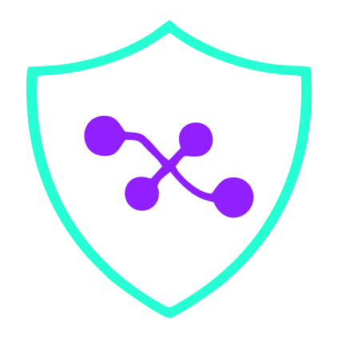

<div class="kai-container">
  

  <button *ngIf="buttonStyle == 'button'" title="{{titleInput}}" class="btn-ia" (click)="IA()">
      Generate
      
  </button>

  <!-- Badge de uso disponible -->
  <span *ngIf="usageInfo$ | async as usage" class="usage-badge"
        [ngClass]="{
          'premium': usage.isPremium,
          'warning': !usage.isPremium && usage.remaining <= 3 && usage.remaining > 0,
          'critical': !usage.isPremium && usage.remaining === 0
        }">
    <ng-container *ngIf="usage.isPremium; else freemiumBadge">
      Ilimitado
    </ng-container>
    <ng-template #freemiumBadge>
      {{ usage.remaining }} / {{ usage.limit }}
    </ng-template>
  </span>
</div>